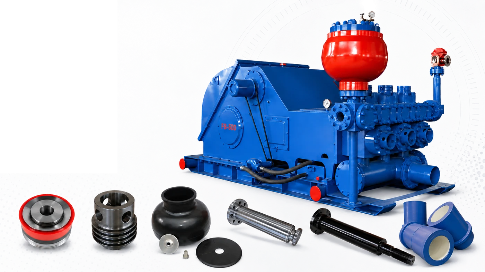
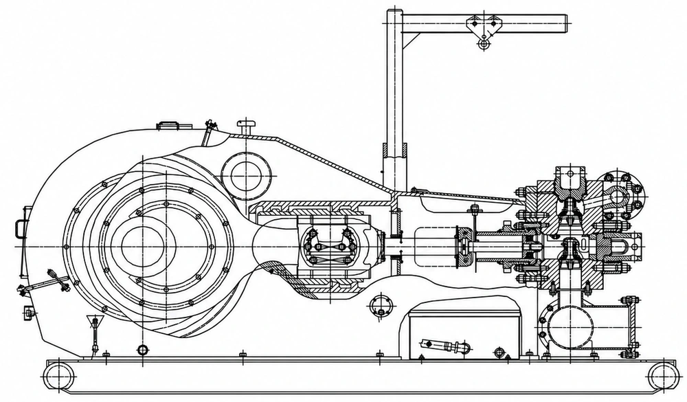

Mud Pump Spare Parts
for Drilling Operations
Reliable replacement parts for routine maintenance, emergency repairs and complete mud pump overhauls.
Parts matched to your equipment
Pratt Oil supplies fluid-end, power-end and expendable parts for a wide range of triplex and duplex mud pumps. Parts can be matched according to the pump model, part number, drawing, nameplate or sample.
Supported pump models include: F-500 · F-800 · F-1000 · F-1300 · F-1600 · F-1600HL · F-2200HL · HHF Series · 3NB Series · RGF Series · FB-1300 · FB-1600 · FC-1600 · 12-P-160 · 14-P-220 and other common mud pump models.

Wide Model CoverageF-Series · 3NB · HHF · RGF · FB · FC
Quality SupplyMatched by part number or drawing
Fast Technical SupportQuotation support from China
EXPLORE / EQUIPMENT & SPARE PARTS
Find your product.
Build your parts list.
Browse by equipment type, explore model details, then send your requirements for a matched quotation.
17 products · View details or request a quote


Drawworks & Brakes
PS Hydraulic Disc Brakes
PS series disc brake systems and matching replacement components.


Drawworks & Brakes
WCB Auxiliary Brakes
Water-cooled auxiliary brake assemblies and replacement parts.


No matching products in this category. Try All Products or another model name.
Confirm the full equipment model, part number and configuration before ordering. Need help identifying a part? Send your nameplate, drawings or photos to our team.
F-1600HL Mud Pump
Spare Parts for Your Mud Pump
Replacement parts for commonly used triplex mud pumps.
- F-Series:
- F-500 / F-800 / F-1000 / F-1300 / F-1600 / F-1600HL / F-2200HL
- FB / FC:
- FB-1300 / FB-1600 / FC-1600
- 3NB:
- 3NB-1300 / 3NB-1600HL / 3NB-2200
- Other models:
- HHF / RGF / 12-P-160 / 14-P-220
Send your pump model or nameplate for parts matching. For F1600 (F-1600) requirements, use our F1600 mud pump spare parts selection guide to prepare your parts inquiry.
View supported pump models
Replacement Parts for Major Mud Pump Series
F-Series Mud Pumps
Spare parts for F-500, F-800, F-1000, F-1300, F-1600, F-1600HL and F-2200HL mud pumps, covering both fluid-end and power-end components.
3NB-Series Mud Pumps
Parts for 3NB mud pumps used on Chinese drilling and workover rigs, including 3NB-1300, 3NB-1600HL, 3NB-2200 and other models.
HHF and RGF-Series Mud Pumps
Replacement wear parts and major mechanical components for HHF and RGF mud pumps.
FB and FC-Series Mud Pumps
Parts for FB-1300, FB-1600, FC-1600 and related models, including liners, pistons, valves, rods, modules and power-end components.
National-Style Mud Pumps
Selected replacement parts for 12-P-160, 14-P-220 and other commonly used drilling pumps.
Cannot Find Your Pump Model?
Send us the nameplate, part number, drawing or component photos. Our technical team will help identify the correct replacement part.
Mud Pump Parts We Manufacture
Wear parts and major components for maintenance and overhaul.
Fluid-End Parts
- Modules, liners and pistons
- Valves and valve seats
- Piston rods, clamps and seals
Power-End Parts
- Crankshafts and pinion shafts
- Gears and connecting rods
- Crossheads, guides and bearings
Manufactured to confirmed drawings, dimensions or samples.

View the complete range of mud pump parts
Parts for Maintenance, Repair and Complete Overhaul
We supply individual wear parts, major replacement components and complete spare-parts packages according to your maintenance requirements.
Fluid-End Parts
- Fluid-end modules
- Cylinder liners
- Pistons and piston rubber kits
- Valves and valve seats
- Piston rods and extension rods
- Rod clamps
- Valve covers and cylinder heads
- Liner retainers and liner cages
- Suction and discharge manifolds
- Pulsation dampener parts
- Seals, gaskets and O-rings
Power-End Parts
- Crankshafts
- Pinion shafts
- Bull gears
- Connecting rods
- Crossheads and crosshead pins
- Upper and lower guides
- Main bearings
- Power-end oil seals
- Lubrication system components
- Frames and structural components
Repair and Wear Parts
- Valve and seat assemblies
- Liner and piston sets
- Piston rubber replacement kits
- Seal and gasket kits
- Bearings and bushings
- Fasteners and retainers
- Complete fluid-end repair packages
Manufacturing Capabilities
Quality You Can Verify
Clear confirmation of specifications, dimensions, materials and quantities before production and delivery.
Machining to Drawings
Parts matched using pump models, OEM numbers, drawings, nameplates and sample photos.
Critical Dimension Control
Specifications, dimensions and materials confirmed before production and delivery.
Maintenance & Overhaul Parts
Individual components, repair kits and complete parts packages for your maintenance plan.
Why choose Pratt Oil?
A Practical Spare-Parts Partner for Drilling Companies and Repair Workshops
Wide Product Coverage
One supplier for mud pump wear parts, fluid-end components and major power-end parts.
Parts Identification Support
We help match parts using pump models, OEM numbers, drawings, nameplates and sample photos.
Flexible Supply
Order individual components, repair kits or complete parts packages according to your maintenance plan.
Replacement Solutions
We provide cost-effective replacement options for discontinued, difficult-to-source and long-lead-time components.
Export Packaging
Parts are packed according to their size, weight and transportation requirements for international shipment.
Technical Communication
Clear confirmation of specifications, dimensions, materials and quantities before production and delivery.
Need Mud Pump Spare Parts?
Send us your parts list, pump nameplate, OEM number or component drawings. We will help identify the correct parts and prepare a quotation for your project.
Jinan Pratt Oil Equipment Co., Ltd.
WhatsApp: +86 15908080040
Email: 1999@pratt-oil.com
Website: www.pratt-oil.com